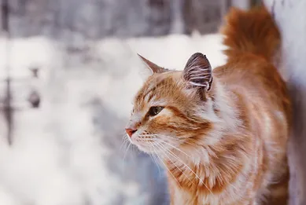
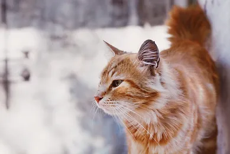
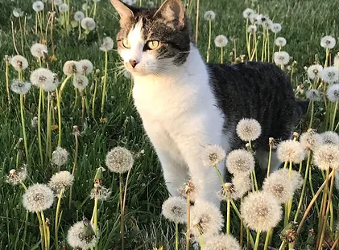
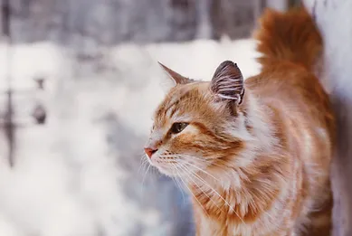

Pisicile sunt animale domestice fascinante și populare, cunoscute pentru grația, independența și personalitățile lor variate. Iată câteva informații generale despre pisici:
Pisicile domestice (Felis catus) sunt animale cu o istorie lungă de domesticire, care datează de aproximativ 9.000 de ani. S-au crezut inițial că provin din Orientul Mijlociu, dar au fost domesticite și răspândite în întreaga lume.
Pisicile au o mare varietate de dimensiuni, culori și tipuri de blană. Ele pot fi de la pisici mici, cum ar fi pisicile exotice, până la pisici mari, cum ar fi Maine Coon-urile. Blana lor poate fi scurtă, medie sau lungă, iar culorile variază de la negru la alb și multe alte nuanțe și modele.
Pisicile sunt animale independente și curioase. Ele sunt cunoscute pentru abilitățile lor de vânătoare, reflexele rapide și agilitatea lor. Pisicile sunt și animale de companie afectuoase și pot dezvolta legături puternice cu stăpânii lor.
Pisicile sunt carnivore, ceea ce înseamnă că necesită o dietă bogată în proteine animale. O dietă echilibrată pentru o pisică include carne, organe, o mică cantitate de legume și fibre. Este important să li se ofere și acces la apă proaspătă în permanență.
Pisicile sunt animale curate și își petrec mult timp curățându-și blana. Pentru a-și menține sănătatea și igiena, ele au nevoie de periaj regulat pentru a elimina firele de păr moarte și a preveni formarea de blănuri.
Durata de viață a unei pisici variază în funcție de rasă, mediu și îngrijire. În general, o pisică domestică poate trăi între 12 și 20 de ani, uneori chiar mai mult.


© Purrfect Land